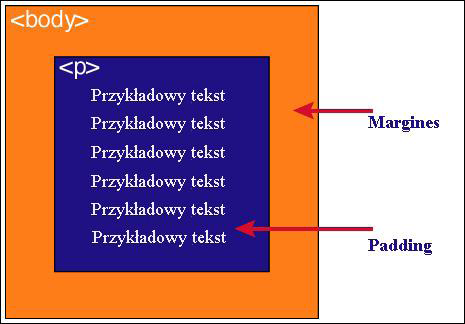

)Podaj definicję modelu pudełkowego.
Każdy element w dokumencie HTML, otacza się prostokątnym obszarem zwanym pudełkiem (ang. Box model).
)Wykonaj oraz uzupełnij tabelę:
| Zawartość | Opis |
| content | zawartość elementu (np.: tekst, obrazek) |
| padding | otaczające marginesy wewnętrzne, odstęp między obramowaniem i zawartością elementu |
| border | obramowania wokół zawartości elementu, ma styl i kolor. |
| margin | marginesy wokół ramki (margines zewnętrzny). Jest to pusty obszar wokół ramki, który nie ma koloru tła i jest przeźroczysty. |
)Podaj dwie uwagi na temat modelu pudełkowego.
1)Padding, border i margin mogą mieć zerową wartość.
2)Tło elementu jest określone dla wszystkich z podanych powyżej obszarów z wyjątkiem marginesów zewnętrznych, które zawsze są przezroczyste (transparent).
)Wstaw grafikę obrazującą model pudełkowy.

)Wstaw grafikę obrazującą różnicę pomiędzy paddingiem i marginesem wraz z opisem.
